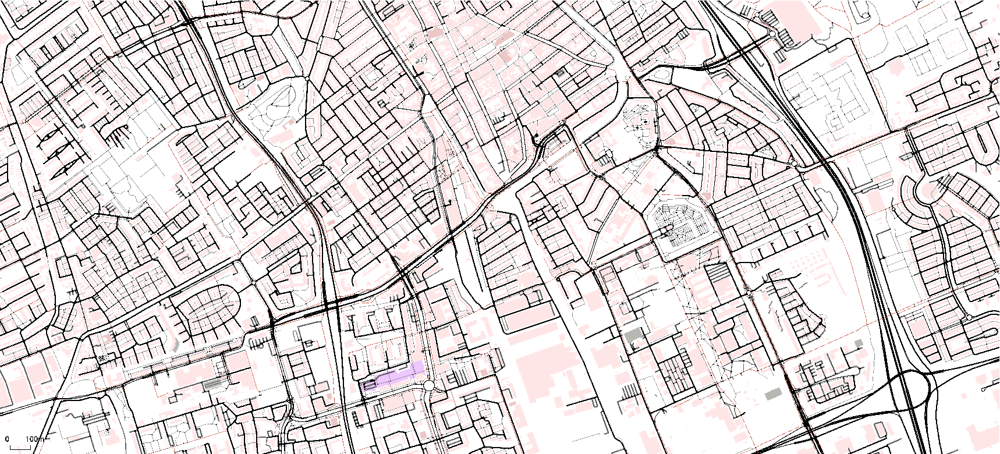

Welcome to the TUD-SUMO Wiki!



This is the documentation for the TUD-SUMO package, a research-oriented wrapper for SUMO[1], developed for the DAIMoND lab at the Technische Universiteit Delft (TUD), the Netherlands.
The main goal of TUD-SUMO is to act as a simplified framework for microscopic traffic simulation that allows researchers and students to focus on the important aspects of their projects; their own work, instead of simulation code. TUD-SUMO provides an easy and standardised way to simulate a wide range of scenarios whilst facilitating complex interactions. Resulting data can then be saved, summarised and visualised with minimal code.
More information on "Simulation of Urban MObility" (SUMO) can be found in the SUMO documentation, here: sumo.dlr.de/docs/
The main features of TUD-SUMO include:
- Automatic and standardised data collection.
- Simplified interface to interact with and control the simulation in complex ways.
- Traffic signal control logic.
- Extendable controllers already implemented (ramp metering, route guidance and variable speed limits).
- An event system with dynamic or scheduled incidents.
- Plotting functions for a wide range of applications.
- Videos for recording the network or specific vehicles during the simulation.
- And more in the future! ...
Links
- Simulation of Urban MObility (SUMO) documentation: sumo.dlr.de/docs
- TUD-SUMO source code (GitHub): DAIMoNDLab/tud-sumo
- TUD-SUMO PyPI distribution: project/tud-sumo
- TUD-SUMO example (GitHub): DAIMoNDLab/tud-sumo-examples
Latest Version
The Latest version of TUD-SUMO is v3.2.3, and was released on 30/04/2025. All previous versions and their change notes can be found on GitHub or PyPI. This documentation was last updated on 13/06/2025.
The most recent change notes are:
Demand Profiles & Plotting Improvements
Warning
Replacing v3.2.2 release due to error at import.
Additions
- Added
DemandProfileclass. - Added ability to save profiles with
DemandProfiles.save()and added toSimulation.save_objects(). - Added ability to load profiles with
Simulation.load_demand_profiles()andSimulation.load_objects(). - Added
Simulation.gui_is_tracking()to return whether a GUI view is tracking a vehicle. - Added
Simulation.get_[twt|to_depart]()functions. - Added
"twt"and"to_depart"toSimulation.get_interval_network_data(). - Added several view functions (
[add|remove]_gui_view(),get_gui_views(),get_view_[boundaries|zoom]()) - Added verbose option to Simulation initialisation.
- Added ability to plot regression line on fundamental diagrams.
- Added ability to plot labels at specific distances along trajectory diagrams and space-time diagrams.
- Added
MultiPlotter.plot_rm_queue_length() - Added
"max_queue"to metered junctions. - Added ability to plot queue length as a percent of capacity in
Plotter.plot_rm_queuing(). - Added
Simulation.[get|set]_vehicle_type_vals()to get and change vehicle type characteristics.
Changes & Improvements
- Added version to simulation start/data.
- Changed
recording_nametorecording_id. - Can now create mp4/avi/gif files.
- Allowed for
video_filenameto be defined separately torecording_idinRecorder.record_[network|vehicle](). - Changed all GUI functions to use the main view ("View #0") by default.
Simulation.gui_stop_tracking()will now throw an error if the view is not tracking a vehicle.- Removed traCI calls from
Recorderclass. - Changed
Recorder.save_recording()to only save single recordings (not by a list of IDs). - Replaced
Plotter.plot_od_demand()with updatedPlotter.plot_demand()that works withDemandProfileobjects. - Updated ramp meter queue calculation to only include stopped vehicles.
- Updated ramp meter delay calculation to be based on vehicle speed and free-flow speed - similarly to network statistics (now also requires
ramp_edgesand notqueue_detector). - Maximum queue length added to
Plotter.plot_rm_queuing(). - Removed ability to measure queue spill back.
- (Temporarily) removed mass from custom vehicle types.
Simulation.add_tracked_junctions()now returnsTrackedJunctionobject(s).
Bug Fixes
- Fixed major error in v3.2.2 causing syntax error at import.
- Fixed error when getting current travel time in
Simulation.get_geometry_vals()(divide by zero error when average speed == 0). - Fixed
Simulation.is_running()not returning false if no demand profiles have been added.
Contact
TUD-SUMO is developed in the DAIMoND lab of TU Delft. For any questions or feedback, please contact Callum Evans at c.evans@tudelft.nl. Bug reports can be created in the GitHub repository: github.com/DAIMoNDLab/tud-sumo.
Acknowledgements
TUD-SUMO is part of the research under the project "AI in Network Management," funded by Rijkswaterstaat, grant agreement nr. 31179439, under the label of ITS Edulab.
Citations
- "Microscopic Traffic Simulation using SUMO"; Pablo Alvarez Lopez, Michael Behrisch, Laura Bieker-Walz, Jakob Erdmann, Yun-Pang Flötteröd, Robert Hilbrich, Leonhard Lücken, Johannes Rummel, Peter Wagner, and Evamarie Wießner. IEEE Intelligent Transportation Systems Conference (ITSC), 2018.